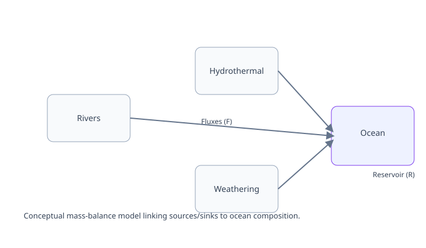

Mass Balance Modeling of Seawater Chemistry and Climate Evolution
We developed a forward box model of the coupled carbon, magnesium, calcium, and lithium cycles (C–Mg–Ca–Li) system over 550–0 Ma, extending the carbon–alkalinity–cation mass-balance framework of Higgins and Schrag (2015). The model is forced by time-varying ocean-crust production rate, which controls seafloor hydrothermal exchange and volcanic CO₂ outgassing from mid-ocean-ridge and arc, along with secondary continental weatherability.
Secular change in ocean-crust production associated with the supercontinent cycle is identified as the first-order control on seawater chemistry and, through it, on atmospheric CO₂ (Weldeghebriel et al., in review).
